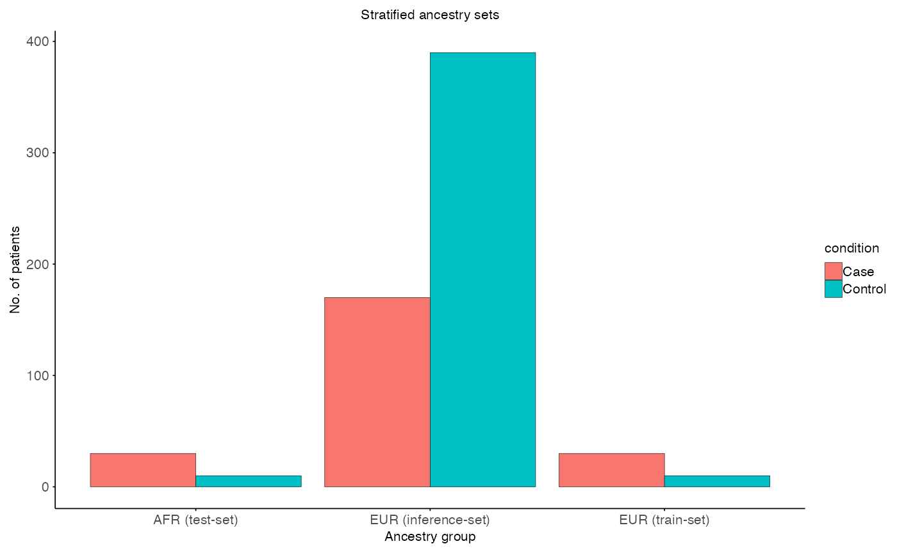

Subset interaction effect
Source:vignettes/permutation_interaction_effect.Rmd
permutation_interaction_effect.RmdIntroduction
Here we showcase how permutation testing is used to assess if
genotype-phenotype relationships differ across ancestries. In omics
research frameworks like limma are gold standard to test
for differetnial expressed genes. However, such frameworks are build on
biological and statistical assuptions on the underlying data. In
permutation testing theses assumptions are reduced, because pvalues are
derived by modelling an empirical null distribution. In case of
interaction effects of the form phenotype x ancestry, the
ancestry label is permuted creating a null, which assumes no effect by
ancestry.
Overrepresentation of EUR ancestry
In omics research EUR ancestry is often overrepresented compared to
other ancestries. Hence, data of non-Europeans is often sparse and can
effect the discovery of true effects. The
frameworkCrossAncestryGenPhen tries to be fair by
subsampling the overrepresented ancestry to match the sample size of the
underrepresented ancestry. The following code snippet showcases such an
imbalance on a simulated dataset.
library(CrossAncestryGenPhen)
library(ggplot2)
# Seed for reproducibility
set.seed(42)
# Example data
n_features <- 100
n_EUR <- 600
n_AFR <- 40
id_EUR <- paste0("Sample_", seq_len(n_EUR))
id_AFR <- paste0("Sample_", seq_len(n_AFR))
# Expression matrices for EUR and AFR ancestries
X <- matrix(rnorm(n_EUR * n_features), nrow = n_EUR, ncol = n_features)
Y <- matrix(rnorm(n_AFR * n_features), nrow = n_AFR, ncol = n_features)
colnames(X) <- colnames(Y) <- paste0("Feature_", seq_len(n_features))
# Metadata for EUR and AFR ancestries
# EUR: overrepresented compared to AFR
MX <- data.frame(
condition = factor(c(rep("Control", 400), rep("Case", 200))),
ancestry = "EUR"
)
# AFR: underrepresented compared to EUR
MY <- data.frame(
condition = factor(c(rep("Control", 10), rep("Case", 30))),
ancestry = "AFR"
)
# Rownames of matrix must be smaple ids
rownames(X) <- rownames(MX) <- id_EUR
rownames(Y) <- rownames(MY) <- id_AFR
# Plot
plot_imbalanced_groups(
MX = MX,
MY = MY,
x_var = "ancestry",
fill_var = "condition",
title = "Imbalanced ancestry groups",
x_label = "Ancestry group",
y_label = "No. of patients"
)
Single subset run
Stratification step
The function split_stratified_ancestry_sets creates a
stratified subset to account for sample size but also control for the
phenotype imbalance in the underrepresented ancestry. The idea is to
create a EUR train set, which is the remaining EUR cohort
after subsampling, a EUR-subset test set (mimicking the
underrepresented ancestry) based on the compared ancestry
inferecnce set. The output will contain train,
test and inference sets and additional
information on used strata. Each subset contains a gene expression
matrix ($X), a metadata frame ($M) and the
used ids ($ids).
g_col <- "condition" # Column with group information (stratified for)
a_col <- "ancestry" # Column with ancestry information
# Split the data into stratified sets
split <- split_stratified_ancestry_sets(
X = X,
Y = Y,
MX = MX,
MY = MY,
g_col = g_col,
a_col = a_col,
seed = 42
)
# Visulaize stratified sets
plot_stratified_sets(
MX = split$test$M,
MY = split$inference$M,
MR = split$train$M,
x_var = "ancestry",
fill_var = "condition",
title = "Stratified ancestry sets",
x_label = "Ancestry group",
y_label = "No. of patients"
)